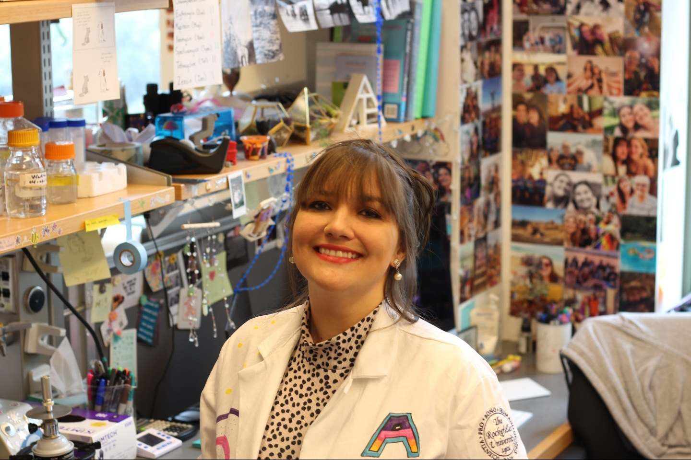
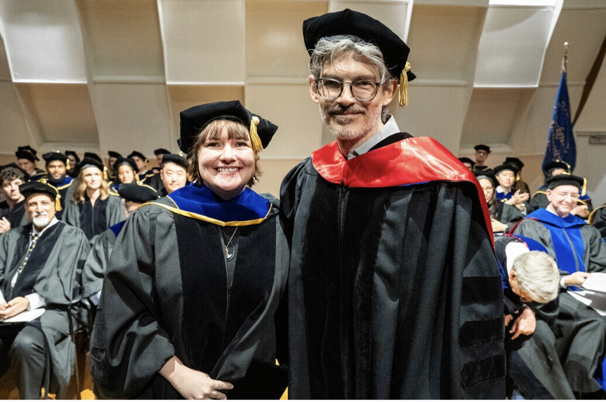

Where I grew up, education was a means to a better life. When I was finally able to study something purely because it fascinated me, I unlocked parts of myself I didn't know existed. Since then, I've delved into and pried apart fascinating biological systems, and found that I love nurturing that same curiosity in others.
I grew up in Bulawayo, Zimbabwe, where learning was a way of getting somewhere safer and more secure, not a personal pursuit. College was the first time that changed: I remember the specific feeling of sitting in a class with no stakes attached to it beyond wanting to understand the material. That single shift in why I was learning is the thread running through everything that follows, from neuroscience to phage biology to the classroom.
As a neuroscience major at Brandeis University, I was captivated by the idea that you could take the most complex system we know of, the brain, and break it down piece by piece to understand how it all works. I joined Avi Rodal's lab and began studying the TDP-43 protein and its role in the neurodegenerative disease Amyotrophic Lateral Sclerosis. It was here that my love of understanding molecular mechanisms truly began.
I carried this fascination to Rockefeller University, where I landed in Luciano Marraffini's lab, studying how CRISPR-Cas systems protect bacteria from bacteriophage. Phage turned out to be the most fulfilling system I've worked in so far: complex enough to harbor real mechanistic depth, yet simple enough that you can pry that detail apart in ways you simply can't in other models. My work on Type III CRISPR-Cas systems became the basis of my PhD thesis and a co-first-author paper in Cell Host & Microbe. What I took away from my time in Luciano's lab, however, wasn't just a thesis: it was a lesson about environment.

The environment matters more than the question.
Science is a deeply impactful and necessary part of any advancing society. But how do we retain talented individuals in such an intellectually demanding career?
By building an environment where learning feels rewarding.
By building an environment where there is room to fail without feeling like a disappointment.
It's the single most important thing to know about how I work, teach, and mentor.
In my classroom, my job is to build a space where curiosity feels safe to act on, not just safe to have.
So many students walk in already convinced they're behind. I see it as my responsibility to break that down, so each one understands they belong in science and that everyone in the room already has something worth contributing.
I've mentored graduate students, taught biology labs to undergraduates, and designed and taught microbiology labs for high school students. Across all of it, building that sense of belonging has mattered as much as any specific learning objective, and the two have always reinforced each other.
I'm always glad to hear from fellow scientists, educators, and search committees. Below are the fastest ways to reach me or find my CV.